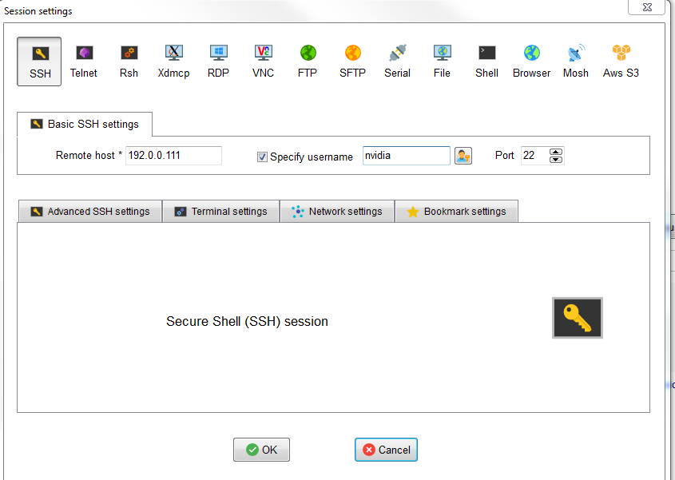

1) Ethernet einrichten
Auf dem eigenen Rechner muß ein Ethernet eingerichtet werden mit:
- 192.0.0.xxx xxx sollte > 200
- 255.255.255.0
2) Firewall aus machen
3) In der Datei C:\ProgramData\eCAL\network.ini müssen folgende Parameter eingestellt sein:
- network_enabled = true
- multicast_ttl = 3 (oder größer)
4) Es müssen für ecalySys routes eingerichtet werden (ob beide gebraucht werden weiß ich nicht)
- in einem command-Fenster eingeben:
- route add -p 192.0.0.0 mask 255.255.255.0 192.0.0.xxx (Hinweis von Jonas)
- route add -p 239.0.0.0 mask 255.255.255.0 192.0.0.xxx (Hinweis von Kerstin)
- route print zum Anzeigen
5) Fahrzeug muss Zündung an sein und der HMI-PC sollte laufen (bin nicht ganz sicher ob notwendig)
Drive-PX1/2 anschalten über System On im Bedien-Monitor
6) ecalSys auf dem Notebook mit Datei: "F_TZ_4500_TopView.ecalsys" starten
- Es muss dann in dem rechten Fenster das eigene Notebook und der HMI-PC angezeigt sein.
- (Oder man startet den ecalMonitor, dort müssen dann in Hosts auch alle tegras zu sehen sein)
- (Wenn tegra oder hmi-PC nicht erscheint, dann habe ich es mit Windows abmelden und anmelden erreicht)
7) Mit ecalsys könne alle tasks gestart
- Für Odometrie-Test wurden die Tasks gestartet:
- cangwHmiCan
- cangwRt4000
- cangwSystemCan
- VehileAbstractionProvider
A) Tool ModaXterm installiert (download vom Internet), wenn man neue Softe installieren will
B) Einrichten ModaXterm:
- Tool starten
- Rechter Mausklick auf "user sessions" und mit new session ein SSH - Fenster wählen
- Remote Host 192.0.0.111 für tegra eintragen (zweite Session mit 192.0.0.112)
- Specify username mit nvidia beszeichnen

C) Man kann das debian- File hochladen auf die entsprechende drivePX
D) starten der installation mit z.B.
sudo dpkg -i dpx2-grid-master-457_arm64.deb
C) oder man kopiert eine einzelne Task:
sudo cp task_name /algos/bin
D) oder einzelne ini-Files:
sudo cp datei.ini /algos/build/ini